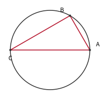
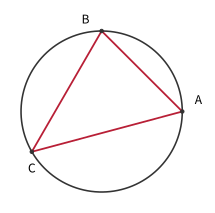
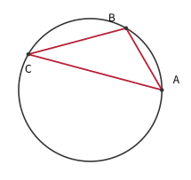

別冊練習問題 9 の解答 弧の比から三角形の角を求める
(1) 円周上の3点 \(A,\ B,\ C\) が円周を \(\overset{\frown}{AB}:\overset{\frown}{BC}:\overset{\frown}{CA}=1:2:3\) に分けるとき、\(\triangle ABC\) の3つの内角を求めよ。
弧の中心角
円周全体が \(360^\circ\)、弧 \(\overset{\frown}{AB}:\overset{\frown}{BC}:\overset{\frown}{CA}=1:2:3\)。
\[\overset{\frown}{AB}=60^\circ,\ \ \overset{\frown}{BC}=120^\circ,\ \ \overset{\frown}{CA}=180^\circ\]
円周角は中心角の半分
各角は、その角が向かい合う弧の中心角の半分。
\[\angle C=30^\circ,\ \ \angle A=60^\circ,\ \ \angle B=90^\circ\]確認
\(30+60+90=180\)。
【答案】
\[\angle A=60^\circ,\ \angle B=90^\circ,\ \angle C=30^\circ\]答
(2) 円周上の3点 \(A,\ B,\ C\) が円周を \(\overset{\frown}{AB}:\overset{\frown}{BC}:\overset{\frown}{CA}=3:4:5\) に分けるとき、\(\triangle ABC\) の3つの内角を求めよ。
弧の中心角
円周全体が \(360^\circ\)、弧 \(\overset{\frown}{AB}:\overset{\frown}{BC}:\overset{\frown}{CA}=3:4:5\)。
\[\overset{\frown}{AB}=90^\circ,\ \ \overset{\frown}{BC}=120^\circ,\ \ \overset{\frown}{CA}=150^\circ\]
円周角は中心角の半分
各角は、その角が向かい合う弧の中心角の半分。
\[\angle C=45^\circ,\ \ \angle A=60^\circ,\ \ \angle B=75^\circ\]確認
\(45+60+75=180\)。
【答案】
\[\angle A=60^\circ,\ \angle B=75^\circ,\ \angle C=45^\circ\]答
(3) 円周上の3点 \(A,\ B,\ C\) が円周を \(\overset{\frown}{AB}:\overset{\frown}{BC}:\overset{\frown}{CA}=2:3:7\) に分けるとき、\(\triangle ABC\) の3つの内角を求めよ。
弧の中心角
円周全体が \(360^\circ\)、弧 \(\overset{\frown}{AB}:\overset{\frown}{BC}:\overset{\frown}{CA}=2:3:7\)。
\[\overset{\frown}{AB}=60^\circ,\ \ \overset{\frown}{BC}=90^\circ,\ \ \overset{\frown}{CA}=210^\circ\]
円周角は中心角の半分
各角は、その角が向かい合う弧の中心角の半分。
\[\angle C=30^\circ,\ \ \angle A=45^\circ,\ \ \angle B=105^\circ\]確認
\(30+45+105=180\)。
【答案】
\[\angle A=45^\circ,\ \angle B=105^\circ,\ \angle C=30^\circ\]答